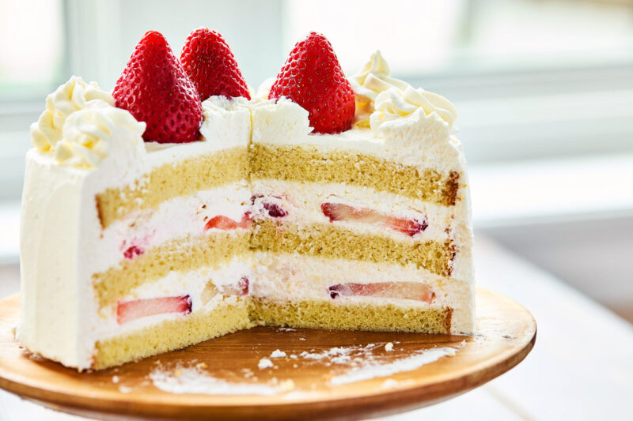

Japanese Strawberry Shortcake

Ingredients
Genoise Sponge Cake
- 2 large eggs
- 1 egg yolk
- 1/3 cup granulated sugar
- 2 tsp honey
- 1/2 cup cake flour
- 1 tbsp cornstarch
- 2 1/2 tsp whole milk
- 1 tbsp + 1 tsp neutral oil
- 1/2 tsp vanilla extract
Sugar Syrup
- 1 tbsp sugar
- 2 tbsp water
Whipped Cream
- 2 cups heavy whipping cream (at least 35%, 42% preferred)
- 1/2 cup powdered sugar
Decoration
- 1 pint fresh strawberries
Instructions
Preparing the Cake Batter
- Preheat oven to 350°F (180°C). Line a 15 cm (6–7 inch) round cake pan with parchment paper.
- Sift the cake flour and cornstarch twice and set aside.
- In a small bowl, whisk together milk, neutral oil, and vanilla extract. Set aside.
- Bring a pot of water (~2.5 inches high) to a gentle simmer over medium low to low heat.
- In the bowl of a stand mixer (or heatproof bowl), add eggs, egg yolk, sugar, and honey. Mix slightly, then place over the simmering water bath. Heat until warm to the touch (about 40–43°C / 104–110°F).
- Immediately transfer to the stand mixer and beat on high speed (Speed 10) for ~5-8 minutes until it looks pale, the increases in volume and thick ribbons form. You should be able to “draw” a ribbon with the whisk attachment that stays on the surface. Reduce to medium speed (speed 4) and mix for 2-3 minutes. Lower to low speed (Speed 2) and beat for 5-6 more minutes to smooth out the batter and eliminate large air bubbles.
Fold & Bake
- Gently fold in the sifted flour and cornstarch using a spatula with a scooping and tossing motion (refer to your video if needed).
- Take a scoop of the batter and mix it with the milk-oil mixture until smooth.
- Pour that back into the main batter and fold until fully incorporated and the batter flows smoothly.
- Pour the batter into your prepared pan. There may be some deflated (darker and denser) batter on top. Use chopsticks to swirl it in a few times and then tap the pan on the counter a few times to remove air bubbles.
- Bake for 25-28 minutes, or until golden and slightly springy. You may hear a soft “fizz” when it’s ready.
- Once out of the oven, tap the pan lightly, invert the cake onto a wire rack lined with paper towel, and let it cool completely.
- Once cooled, wrap tightly until ready to assemble.
Make the Sugar Syrup & Whipped Cream
- Sugar Syrup: Heat sugar and water in a small saucepan or microwave-safe bowl until sugar is fully dissolved. Let cool.
- Whipped Cream: Prepare an ice bath (a large bowl with ice and cold water). Place your mixing bowl into the ice bath. Add cold heavy cream and powdered sugar. Whip on high speed until medium peaks form. Set aside half of the cream. Continue whipping the other half to stiff peaks for layering.
Assemble the Cake
- Slice strawberries into 1/4-inch thick pieces. Reserve whole or halved strawberries for the top.
- Using a cake slicer or serrated knife, slice your sponge cake horizontally into 2 or 3 even layers.
- Lightly brush both sides of each layer with sugar syrup. Keep them wrapped to prevent drying out.
- On the first layer, spread a thin layer of stiff whipped cream, followed by a single layer of sliced strawberries.
- Spread another layer of cream over the strawberries to fill gaps and smooth the surface.
- Repeat with the second layer.
- Place the final cake layer on top and apply a thin crumb coat of cream.
- Use the softer whipped cream to frost the entire cake. Decorate with leftover cream using a piping tip of your choice and top with whole or halved strawberries.
- Chill in the refrigerator for at least 3 hours, preferably overnight, to set.
- Slice with sharp knife, serve and enjoy!
| Calories |
Sugar |
Sodium |
Fat |
Saturated Fat |
Unsaturated Fat |
Carbohydrates |
Fiber |
Protein |
Cholesterol |
2398 |
158g |
150mg |
207g |
118g |
89g |
225g |
10g |
35g |
Cholesterol |